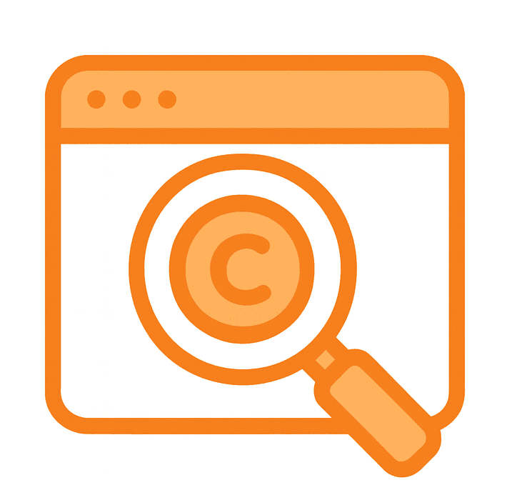

Aula PI: Aprende, explora e innova
Un aula digital de aprendizaje sobre Propiedad Intelectual en Castilla y León, diseñada para fortalecer tus competencias en vigilancia tecnológica e inteligencia competitiva.
Explora las patentes y registros de CyL Habla con el asistente educativo
Funcionalidades principales
Asistente Educativo – Duero
Aprende con Duero: resuelve dudas, explora conceptos y recibe acompañamiento personalizado en tu formación.

Buscador de Propiedad Intelectual
Consulta patentes, modelos de utilidad, marcas y derechos de autor. Descubre la innovación generada en universidades y centros de investigación.
Recursos de Aprendizaje
Legislación, materiales y recursos adicionales para que amplíes tus conocimientos en innovación y propiedad intelectual y conectes la teoría con la práctica.

Preguntas frecuentes
Aula PI está diseñado para estudiantes de secundaria, universidad y posgrado; profesorado y formadores; investigadores/as y personal técnico; así como empresas e instituciones que apuestan por la innovación.
üå± Educaci√≥n integral: contenidos claros y adaptados a cada nivel acad√©mico.
üî¨ Ciencia e innovaci√≥n: fomenta la vigilancia tecnol√≥gica y la inteligencia competitiva.
üí° Aplicaci√≥n práctica: conecta los conocimientos con ejemplos reales de Castilla y Le√≥n.
ü§ù Colaboraci√≥n: puente entre estudiantes, profesorado, investigadores y empresas.
El profesorado puede usar Aula PI como recurso complementario en sus asignaturas, proponiendo actividades prácticas con el buscador de propiedad intelectual, trabajando con los recursos de aprendizaje, o utilizando al asistente educativo como apoyo para resolver dudas en tiempo real.
Sí. Aula PI es un servicio abierto y gratuito para toda la comunidad educativa y cualquier persona interesada en fortalecer sus competencias en innovación y propiedad intelectual.
Aula PI combina formación práctica, herramientas digitales y un enfoque regional basado en los casos de Castilla y León. Además, integra acompañamiento personalizado gracias al asistente educativo.